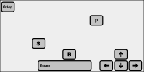
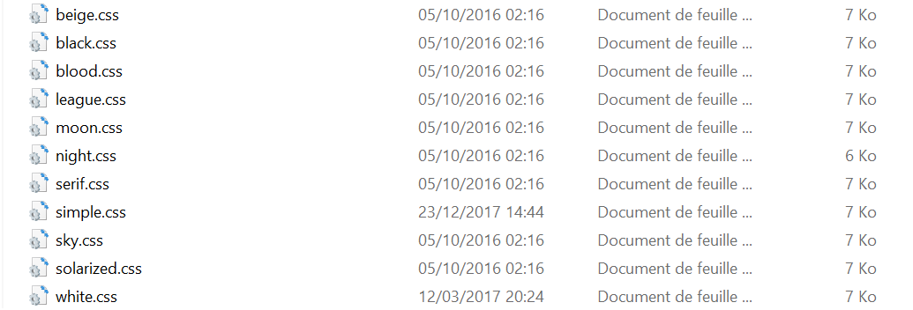

Animée par Emmanuel Bourassin, inspiré par le revealjs.com
Le but de cette présentation est d'apprendre à utiliser revealJS, tant dans la conception ou la modification du support que lors d'une présentation.
Un navigateur web
Un éditeur de texte avec coloration syntaxique
C'est tout :-)
Touches utiles :
Oh, une slide en dessous !
Encore une...
Là c'est la dernière (la flèche du bas est grisée)
Il va falloir remonter ou bien partir sur le côté !
<link rel="stylesheet" href="css/theme/black.css" id="theme">Pour modifier, il suffit de remplacer "simple.css" par le nom d'un autre fichier css.
Ils sont tous dans le répertoire css/theme
Faites plusieurs essais et trouvez celui qui vous plait le plus.
Une fois le nom modifié dans le code html, sauvegarder le fichier et actualisez le navigateur pour voir le nouveau thème.
Intéressons-nous à ce qui est aussi paramétrable. Comme précédemment, modifiez les valeurs des paramètres et sauvegardez pour observer l'effet des différents paramètres :
Reveal.initialize({
controls: true, // Display controls in the bottom right corner
progress: true, // Display a presentation progress bar
history: true, // Push each slide change to the browser history
center: true, // Vertical centering of slides
slideNumber: true, // Display the page number of the current slide
autoSlide: 5000, // Slide every duration milliseconds
theme: 'default', // available themes are in /css/theme
transition: 'slide', // none/fade/slide/convex/concave/zoom
On va commencer simplement :
le but c'est de modifier le code html pour ajouter une image mais ne l'afficher qu'après ce texte.
Maintenant qu'on a vu comment faire apparaître un objet, on va ajouter des effets, comme :
vers la gauche
vers la droite
vers le bas
ou même vers haut !
Mais c'est mélangé !? Exercice : corriger dans le fichier html les effets d'apparition ci-dessus.
Bon, ça fait pas mal d'effets d'animation ! En bonus, trois autres qui permettent de :
faire grossir un élément
faire rétrécir un élément
le faire disparaître...
Ajouter un quatrième élément à la liste :
| Une colonne | Une autre colonne | Encore une colonne |
|---|---|---|
| Et du contenu | ???? | :-) |
| une case vide -> | ... | |
| -- | //// | & |
Maintenant, à vous de modifier le style de la présentation :
Il faudrait que les titres de type h2 soient moins grands, justifiés à droite et en italique.
C'est fait ? OK, maintenant changez le fond de la présentation !
Même exercice qu'avant mais uniquement pour cette diapo !
Supprimez cette diapo !
Maintenant, à vous de modifier le style de la présentation :
Il faudrait que les titres de type h2 soient moins grands, justifiés à droite et en italique.
C'est fait ? OK, maintenant changez le fond de la présentation !
Même exercice qu'avant mais uniquement pour cette diapo !
Maintenant, essayer de faire en sorte que la diapo 7.2 s'affiche correctement !
Maintenant que vous avez les bases techniques pour remplir vos slides, un peu de théorie.
L'étape suivante c'est de créer sa propre feuille de style. N'hésitez pas à lire le fichier README.md qui se trouve dans le répertoire css/theme pour apprendre à créer un thème.
Une présentation RevealJS peut être utilisée hors-ligne. Parfois certaines typographies appelées via GoogleFonts ne se chargeront pas et seront substitutées par des polices système.
Pour déplacer la présentation sur une clé USB, il suffit de copier l'intégralité du dossier dans lequel se trouve le fichier html.
Il est aussi possible de le mettre en ligne comme n'importe quelle page web. Les GitHub Pages fonctionnent très bien cela.
Une présentation de stage ING2
Ce cours c'est qu'une petite introduction à RevealJS. Pour vous perfectionnez, n'hésitez pas à consulter le code source, la documentation et aussi la présentation revealjs.com sur laquelle cette formation est basée.